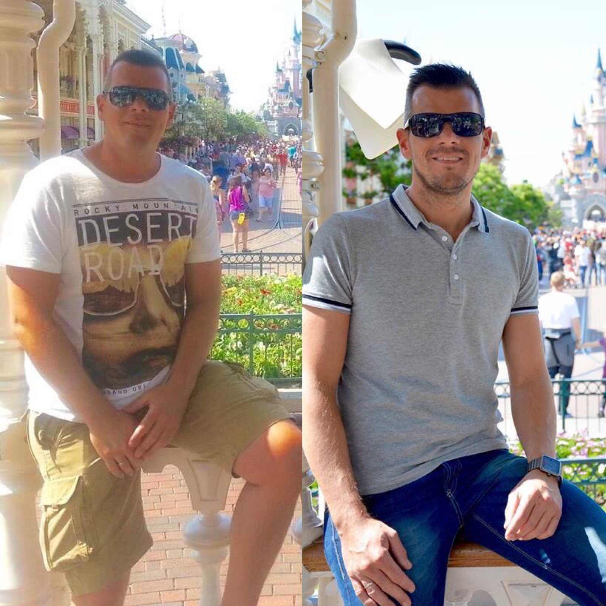
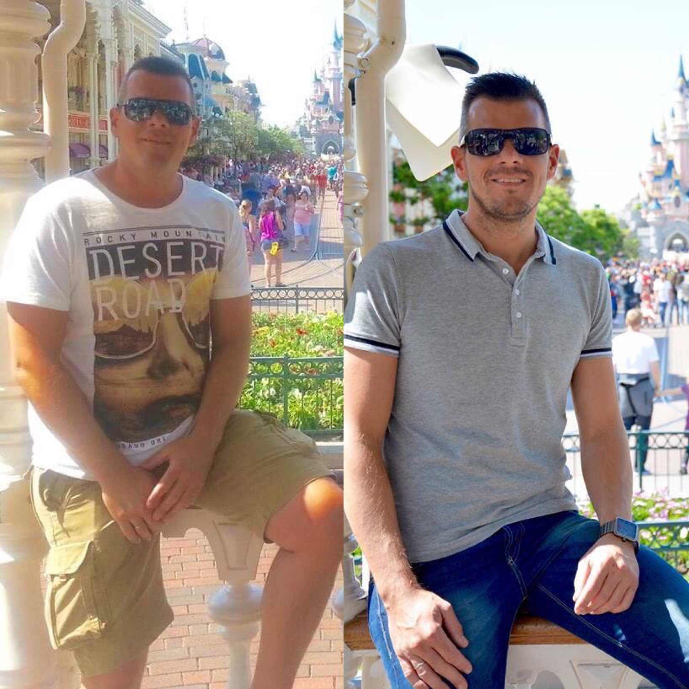

Innerlijke voeding
Waarom is gezond eten en drinken belangrijk?
Je lichaam haalt bouwstoffen uit voeding en drinken. Als je gezond eet, krijg je voedingsstoffen binnen die noodzakelijk zijn voor alle cellen in je lichaam. Gezonde voedingsstoffen voorkomen ook dat je bepaalde ziektes krijgt, zoals suikerziekte en andere. Daarnaast blijf je door gezonde voeding makkelijker op een gezond gewicht.
Wie ben ik?
Ik ben Annouschka Defenin 49 jaar en ik ben in 2003 gestart als Herbalife promotor.
Dankzij mijn fantastische productresultaten heb ik in 2003 de beslissing genomen om mensen te helpen naar een betere, algemene gezondheid en daarom promoot ik ook met heel veel passie "Healthy Active Lifestyle".
Uiterlijke verzorging
Gebruik verzorginsproducten om uw eeuwige jongheid te behouden!
Vanaf 5 personen is er een mogelijkheid tot een gratis workshop met testen van producten.
 
